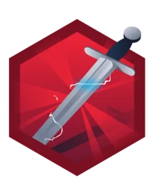

Atharva
Kulkarni
CEH V12 · GCHQ-Accredited MSc Applied Cyber Security · Targeting Penetration Testing & Red Team
Turning 3 years of enterprise infrastructure knowledge into offensive security expertise — finding the gaps before adversaries do.
About Me
I am a CEH-certified ethical hacker with a GCHQ-accredited MSc in Applied Cyber Security, making a deliberate move into offensive security from a foundation in enterprise IT — Active Directory, endpoint hardening, network operations, and incident investigation. That background gives me an attacker's instinct for where real systems break: misconfigurations, weak identity boundaries, and overlooked integrations.
My career began in enterprise IT and network operations — configuring and hardening 250+ devices, managing Active Directory and endpoint compliance, and running incident investigations across complex Windows environments. At Eurostop I now own data integrity and conduct security assessments across enterprise EPOS platforms, middleware, a cloud POS, and internal integrations, applying root-cause analysis and operational-security thinking at scale. The thread through all of it is the same instinct that drives good penetration testing: trace the data, find the anomaly, secure the boundary.
Academically, my research is offensive in nature — my MSc dissertation weaponised Generative Adversarial Networks against hardware Physical Unclonable Functions. Outside work I am continuously hands-on: completing TryHackMe pentest paths, working live HackTheBox machines, and building toward the eJPT and OSCP, with red team operations and the CRTO as the long-term target. I am based in London and open to junior penetration testing and security analyst roles across the UK.
🔍 Offensive Mindset from Enterprise Ops
Years managing LAN/WAN, Active Directory, and middleware gave me direct insight into the misconfigurations attackers exploit first.
🎓 Research-Led Security Thinking
MSc dissertation on Machine Learning Attacks on Physical Unclonable Functions — demonstrating threat research capability at hardware and cryptographic levels.
⚡ Hands-On Lab Practice
Actively practising manual exploit identification, network reconnaissance, and vulnerability assessment through TryHackMe Junior Pentest Path and HackTheBox.
Skills
Offensive Security
Tools & Platforms
Infrastructure & Defensive
Certifications & Programming
Experience
Technical Support Analyst
Primary technical escalation point for enterprise EPOS and retail systems, overseeing secure data flows across in-store tills, middleware, head-office platforms, and third-party integrations.
- Investigate and resolve complex data integrity failures across interconnected retail systems.
- Enforce operational security controls including secure access management and incident investigation workflows.
- Drive process improvements that enhance system resilience and reduce operational disruption.
DSS Engineer
Delivered enterprise-grade IT support for VIP executive clients, managing the full hardware and software lifecycle with a focus on security-hardened configurations.
- Proposed security-first asset lifecycle improvements including Intune-Autopilot integration and Nexthink tracking.
- Resolved Active Directory and authentication compliance issues across enterprise user accounts.
- Configured tenant lock and ServiceNow workflows, improving IT efficiency and security posture.
Technical Support Engineer
Provided Tier 1–2 support for BT Broadband products, exceeding performance benchmarks through technical precision and cyber-awareness education.
- Reduced query resolution time by 35% through structured diagnostic workflows.
- Achieved an 85% increase in customer satisfaction ratings.
- Reduced escalated tickets by 80% across broadband, mobile, and home tech.
- Educated customers on phishing and cybersecurity scams, reducing breach incidents.
Network Operations Specialist
Led network infrastructure operations for a large enterprise, delivering measurable security and efficiency improvements across 250+ devices.
- Reduced network outage response time by 30% via ServiceNow-integrated processes.
- Decreased security breaches by 25% through hardened device configurations.
- Configured 250+ machines, increasing onboarding efficiency by 25%.
- Delivered cybersecurity awareness training, raising employee threat awareness by 15%.
Claude Org Framework — AI Agent Orchestration
A production-grade multi-agent operating system built on Claude Code. 89 role-scoped agents across a full org chart — engineering, security, QA, DevOps, product — each with its own remit, escalation path and sign-off gates. Clone it and run your own AI-powered organisation.
- 89 role-scoped agents with enforced separation between building, reviewing and shipping
- Mandatory security and QA sign-off gates before anything reaches production
- Git hooks and a consistency checker that block policy violations mechanically, not by convention
Cybersec Toolkit
A client-side cybersecurity utilities toolkit — encoding/decoding, hashing, JWT/AES/RSA tools, a CyberChef-style recipe chainer, and OSINT lookups. Nothing ever leaves the browser except a few clearly-disclosed public API calls.
- Encoding, hashing, and JWT/AES/RSA tooling with a CyberChef-style recipe chainer
- OSINT lookup utilities alongside classic encode/decode and crypto tools
- Fully client-side — no data leaves the browser except disclosed public API calls
The Vault
A fast, fully client-side knowledge base for 248 cybersecurity notes — cloud, GRC, OSCP, and red-team — with an Obsidian-style reader: instant full-text search, a command palette, wiki-style cross-links, an interactive link graph, and backlinks. No backend, nothing leaves the browser.
- 248 interlinked notes across four tracks with full-text search and a ⌘K command palette
- Wiki-links, backlinks, an interactive link graph, and a scroll-spy table of contents
- Fully static and client-side — HTML sanitised with DOMPurify, all assets vendored, zero external calls
JobScope — UK Job Aggregator
UK job aggregator that filters listings by visa sponsorship status and security clearance requirements — built for candidates who need to know eligibility before they apply. Resume parsing powered by Claude AI.
- Filters roles by visa sponsorship and security clearance eligibility
- Claude AI resume parsing for automated candidate-to-role matching
- IDOR, SSRF, and prompt-injection defences built in from the ground up
Blueprint — Project Management Tool
A project management dashboard for tracking tasks, milestones, and team progress. Built as a single-page app with a clean kanban-style interface.
- Visual project and task tracking with status columns
- Milestone management with progress indicators
- Deployed via GitHub Actions to GitHub Pages
Finance Dashboard — Personal Finance Tracker
Comprehensive personal finance tracker for NRI/UK professionals. Tracks income, expenses, investments, debts, and goals across GBP and INR. Includes ROAI analytics, envelope budgeting, bill calendar, SMS transaction parsing, and OLED dark mode.
- Cross-currency portfolio tracking with real-time ROAI metrics
- SMS and CSV bank import with auto-categorisation
- Privacy mode, keyboard shortcuts, and OLED dark mode
Domino
Chained seven weaknesses into a root shell and all 5 flags — user enumeration, IDOR, blind XSS session hijack, JWT alg:none forgery, RFI to RCE, password reuse, then a group-writable cron script.
Flag Vault 2
Exploited a format string vulnerability (CWE-134) in printf() to leak a flag from stack memory — no buffer overflow needed.
Flag Vault
Exploited a stack buffer overflow (CWE-121) via gets() to overwrite an adjacent stack variable and bypass authentication.
Capture!
Built a custom Python script to enumerate valid usernames via differential error messages and solve math-based CAPTCHAs programmatically.
Simple CTF
Exploited CVE-2019-9053 (time-based blind SQLi, CVSSv3.0 8.1) in CMS Made Simple to extract credentials, then escalated to root via vim sudo misconfiguration.
Pickle Rick
Retrieved credentials via information disclosure in HTML comments and robots.txt, then achieved RCE and root escalation through a misconfigured sudo policy.
Education
MSc Applied Cyber Security
Queen's University Belfast
GCHQ-accredited. Modules: Network Security & Monitoring, Malware Analysis, Software Assurance, Computer Forensics, Applied Cryptography. Dissertation: ML Attacks on PUFs.
BSc Computer Science
Pillai College of Arts, Commerce & Sciences
Core modules in network technologies, routing protocols, Cisco infrastructure, and network security. Python specialisation.

Sword Apprentice rare: 3.7% Completing the SQLMap roomCurrently Learning
Active Focus
TryHackMe — Offensive Pentesting Path
Advanced exploitation, Active Directory attacks, and post-exploitation methodology beyond the Jr path.
● In ProgressHackTheBox — Active Machines
Practising real-world enumeration, foothold identification, and privilege escalation on live boxes.
● OngoingOSCP Preparation
Building methodology for OffSec Certified Professional — buffer overflows, manual exploitation, and structured report writing.
◆ Targeting 2026–27Certification Roadmap
CEH V12
Certified Ethical Hacker — foundations of offensive security
✓ CompletedTryHackMe Jr Pentest Path
Structured junior penetration testing curriculum
● OngoingeJPT — eLearnSecurity Junior Penetration Tester
Hands-on entry-level pentesting certification
□ UpcomingTryHackMe — Penetration Tester (PT1)
Intermediate penetration testing certification — the PT1 exam
□ UpcomingOSCP — OffSec Certified Professional
Industry-standard offensive security certification
□ UpcomingCPTS — Certified Penetration Testing Specialist
Hands-on penetration testing certification — Hack The Box
□ UpcomingCRTO — Certified Red Team Operator
Red team operations, C2 frameworks, and adversary simulation
□ Long-term GoalTestimonials
Atharva demonstrated an unwavering commitment to his tasks. His ability to handle a wide array of responsibilities — from managing security for laptops for new joiners to troubleshooting network issues — showcased his versatility and problem-solving skills. His attention to detail and meticulous approach in cybersecurity, network ops, and overall tech support were truly commendable. His proactive attitude greatly contributed to the smooth operation of our IT support functions. He has proven to be a valuable asset, and I am confident that he will continue to excel in his future endeavors.
Atharva’s expertise in network support was evident throughout his internship. His adeptness in configuring and troubleshooting network devices ensured uninterrupted connectivity. Noteworthy was his initiative in setting up VPN connections for remote employees, showcasing his grasp of complex tunneling protocols and encryption methods. His proactive approach stood out — he not only excelled in routine tasks but also proposed network optimisation and security enhancement measures. He is a promising candidate for any network-related role, and I’m confident he will continue making valuable contributions.
Resume
Contact
Let's connect
Open to Junior Penetration Tester roles and security engineering opportunities in the UK. Always happy to discuss offensive security, CTF challenges, or potential collaborations.